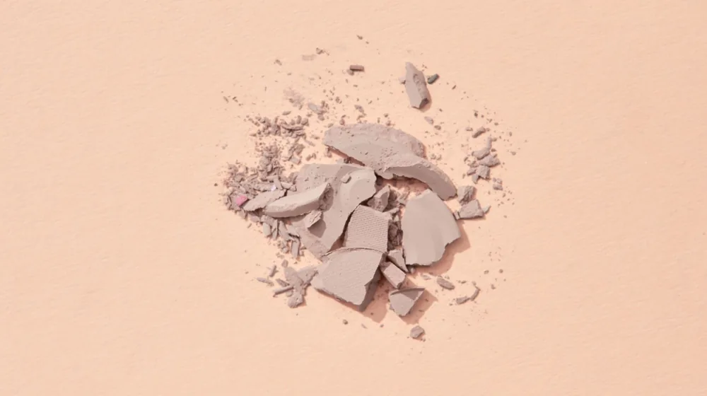

쿠션 파운데이션 vs 팩트, 피부 표현부터 지속력까지 완벽 비교!
사진: MART PRODUCTION / Pexels (무료 이미지, 출처 표기)
쿠션 파운데이션 vs 팩트: 핵심 차이점은?

피부 화장의 필수 아이템인 쿠션 파운데이션과 팩트는 언뜻 비슷해 보이지만, 제형과 기능 면에서 명확한 차이를 보입니다. 쿠션 파운데이션은 액상 파운데이션을 스펀지에 담아낸 형태로, 주로 촉촉함과 자연스러운 윤광 표현에 강점을 가집니다. 간편하게 톡톡 두드려 바를 수 있어 휴대 및 수정 화장에 용이합니다.
반면 팩트는 고체형 파운데이션(파운데이션 팩트)이거나 압축된 파우더(프레스드 파우더 팩트)를 의미합니다. 보송한 마무리감과 높은 커버력, 그리고 유분 조절 기능이 뛰어나 지속력을 높이는 데 효과적입니다. 주로 피부 결점을 가리고 매트한 피부 표현을 선호하는 분들에게 적합합니다.
내 피부에 찰떡궁합! 피부 타입별 추천 가이드
자신의 피부 타입에 맞는 제품을 선택하는 것이 가장 중요합니다. 잘못된 선택은 메이크업의 지속력을 떨어뜨리거나 피부 트러블을 유발할 수 있습니다.
- 건성/복합성 피부: 건조함을 느끼는 분들에게는 촉촉한 제형의 쿠션 파운데이션이 좋습니다. 수분감이 풍부하여 들뜸 없이 피부에 밀착되며, 은은한 윤광으로 건강한 피부를 연출할 수 있습니다. 건조함이 심한 날에는 보습 기능이 강화된 제품을 선택하는 것이 효과적입니다.
- 지성/트러블성 피부: 유분기가 많거나 번들거림이 고민이라면 팩트 사용을 추천합니다. 특히 매트한 마무리감의 파운데이션 팩트나 유분 흡수 기능이 있는 파우더 팩트가 피지를 효과적으로 조절하여 보송한 상태를 오래 유지해줍니다. 가벼운 제형의 제품을 선택하여 모공을 막지 않도록 주의하는 것이 좋습니다.
- 민감성 피부: 성분 확인은 필수입니다. 피부 자극이 적은 무기 자외선 차단 성분이 포함되었거나, 특정 알레르기 유발 성분이 배제된 제품을 선택하세요. 에어리스(airless) 용기에 담긴 제품은 내용물의 오염 위험을 줄여 민감성 피부에 더욱 안전할 수 있습니다.
언제 무엇을 쓸까? 사용 목적에 따른 현명한 선택
쿠션과 팩트는 사용 목적에 따라 활용도가 달라집니다. 상황에 맞게 적절히 활용하면 더욱 완벽한 피부 메이크업을 완성할 수 있습니다.
- 데일리 메이크업 및 빠른 외출: 간편함이 최우선이라면 쿠션 파운데이션이 좋습니다. 짧은 시간 안에 피부톤을 정돈하고 자연스러운 커버를 가능하게 해줍니다. 거울을 보며 톡톡 두드리면 베이스 메이크업을 빠르고 쉽게 마칠 수 있습니다.
- 중요한 약속 및 오랜 지속력 필요 시: 오랜 시간 깔끔한 메이크업을 유지해야 할 때는 팩트가 강점을 보입니다. 파운데이션으로 베이스를 마친 후, 팩트를 가볍게 쓸어주면 유분기를 잡아주고 메이크업의 지속력을 크게 높일 수 있습니다. 커버력이 높은 파운데이션 팩트를 단독으로 사용해도 좋습니다.
- 수정 화장: 건조함 없이 빠르게 피부를 정돈하고 싶다면 쿠션 파운데이션이 유용합니다. 특히 건조한 환경에서는 촉촉한 쿠션이 들뜸 없이 다시 피부에 밀착됩니다. 번들거림을 잡고 보송함을 되살리고 싶을 때는 팩트로 유분기가 도는 부분만 가볍게 눌러주면 됩니다.
밀착력, 커버력, 지속력: 성능 비교 포인트
쿠션 파운데이션과 팩트의 주요 성능 지표를 비교하여, 자신에게 더 적합한 제품을 선택하는 데 도움을 드립니다. 다음 표는 2026년 08월 기준으로 일반적인 제품의 특성을 비교한 것입니다.
실패 없는 쿠션/팩트 사용을 위한 꿀팁
제품의 특성을 이해하고 올바른 방법으로 사용하면, 메이크업 효과를 극대화할 수 있습니다.
- 쿠션 파운데이션: 퍼프에 소량만 묻혀 얼굴 중앙부터 바깥쪽으로 가볍게 두드려줍니다. 양 조절에 실패하면 두껍게 발릴 수 있으니 주의하세요. 퍼프는 주기적으로 세척하거나 교체하여 위생적으로 관리하는 것이 중요합니다.
- 팩트: 브러쉬나 내장된 퍼프를 사용하여 가볍게 쓸어주거나 눌러줍니다. 특히 유분이 많이 올라오는 T존과 나비존 위주로 바르면 번들거림을 효과적으로 잡을 수 있습니다. 건조한 부위에 너무 많은 양을 사용하면 들뜸 현상이 생길 수 있으니 피하는 것이 좋습니다.
- 두 제품의 현명한 조합: 커버력이 필요한 날에는 액상 파운데이션이나 커버력 좋은 쿠션을 사용한 뒤, 유분기나 번들거림이 신경 쓰이는 부위에만 팩트를 가볍게 덧발라주세요. 이렇게 하면 피부는 촉촉하면서도 메이크업 지속력을 높일 수 있습니다.
쿠션 파운데이션과 팩트는 각각의 장단점을 가지고 있습니다. 이 글에서 제시된 가이드라인을 바탕으로 자신의 피부 타입, 선호하는 메이크업 연출, 그리고 사용 목적에 가장 적합한 제품을 선택하여 자신감 있는 피부 표현을 완성하시길 바랍니다. 정확한 사항은 각 브랜드의 공식 홈페이지나 전문점에서 다시 확인하시길 권장합니다.
🔗 이 글도 함께 보면 좋아요: 매일 하는 실수? 손상된 머리카락, 근본적으로 건강하게 되돌리는 5가지 비법
관련 추천 상품
쿠션 파운데이션, 팩트 파운데이션, 메이크업 팩트 관련 인기 상품 보러가기
이 포스팅은 쿠팡 파트너스 활동의 일환으로, 이에 따른 일정액의 수수료를 제공받습니다.